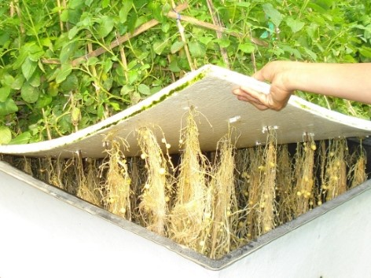

ARTIKEL
Inilah Langkah-Langkah Budidaya Tanaman Kentang dengan Sistem Aeroponik
___
Pada dasarnya, hampir semua tanaman bisa dibudidayakan dengan menggunakan metode aeroponik, salah satunya yakni kentang. Kentang (Solanum Tuberosum L.) merupakan tanaman terpenting keempat didunia. Sayuran yang termasuk kedalam jenis umbi-umbian ini dapat dikonsumsi sebagai makanan pokok.
Biasanya, kentang ditanam dengan menggunakan tanah dan membutuhkan lahan yang cukup luas. Namun tak perlu risau, dengan kemajuan teknologi pertanian, cara menanm kentang tak hanya dapat ditanam dengan cara tradisional melainkan dengan cara modern seperti teknik aeroponik. Teknik ini tak perlu menggunakan banyak lahan sehingga para petani yang tidak memiliki lahan luas dapat memanfaatkan teknik ini.
Teknik aeroponik dilakukan dengan pengkabutan nutrisi pada tanaman sedangkan hidroponik menggunakan bantuan air. Untuk mengetahui lebih lanjut tentang budidaya kentang aeroponik, Anda dapat menyimak artikel berikut ini.
1. Persiapan
Persiapan merupakan landasan yang penting sebelum melakukan suatu hal. Dengan adanya persiapan, maka segala sesuatu akan terwujud sesuai dengan keinginan. Begitupula dengan persiapan ketika ingin budidaya, tentunya agar budidaya dapat berjalan dengan baik tanpa ada hambatan serta gangguan. Berikut adalah persiapan budidaya tanaman kentang aeroponik:
- Persiapan pertama dalam budidaya kentang aeroponik yakni screen house. Gcreen house merupakan bangunan yang dapat melindungi tanaman dari hama dan penyakit. Bangunan ini terbuat dari rangka besi, bambu ataupun kayu yang dilapisi plastik UV agar tidak menyebabkan pengurangan kualitas intensitas cahaya.
- Selain green house, mempersiapkan bak penanaman juga tak kalah penting. Bak penanaman aeroponik terbuat dari kayu setinggi 1 m dengan lebar 0.8 m. Permukaan bak berupa styrofoam berukuran 1×1 m. Styrofoam digunakankarena bersifat ringan dan mudah didapat.
2. Pemilihan dan Perbanyakan Bibit Kentang
Proses selanjutnya yakni, memilih bibit kentang. Dalam pemilihan bibit kentang harus disesuaikan dengan suhu udara , cuaca, kelembaban serta lokasi budidaya. Bibit kentang berasal dari kultur jaringan yang sudah di stek sebanyak 3 kali. Penyetekan dilakkan ketika planlet berumur 3-4 minggu. Bibit dapat dilakukan penyetekan kembali apabila sudah memiliki batang yang kuat serta akar yang sehat. Pembibitan juga dapat menggunakan cara konvensional, yakni dengan menyemaikan benih pada media penyemaian.
3. Proses Penanaman Kentang Aeroponik
Sebelum proses ini, pastikan bak-bak bersih dari lumut dan kotoran lainnya. Priksalah keadaan nozzle apakah tersumbat atau tidak. Apabila tersumbat, segera atasi masalah tersebut. Penyumbatan nozzle dapat mengakibatkan penurunan intensitas penyemprotan larutan. Bibit kentang yang telah dihasilkan dipindahkan kedalam sistem aeroponik yang ditutup dengan rockwool dan dibiarkan tumbuh. Akar kentang dibiarkan menggulung tanpa menggunakan media apapun. Akar kentang yang menggulung disemprot dengan larutan nutrisi. Larutan nutrisi dapat diberikan secara bertahap sesuai kebutuhan tanaman. Pada sistem ini, zat hara diserap secara langsung oleh akar sehingga menghasilkan kualitas kentang yang baik. Larutan Nutrisi yang digunakan sebaiknya mengandung komposisi kimia seperti, Kalsium Nitrat, Kalium Nitrat, Magnesium Sulfat, Asam Borat, serta Amonium Malibdat.
4. Perawatan dan Pemeliharaan
Setelah penanaman, tahapan yang tak kalah penting yakni perawatan dan pemeliharaan tanaman kentang aeroponik. Perawatan dilakukan dengan memberikan nutrisi yang disemprotkan secara langsung melalui sistem aeroponik. Selain pemberian nutrisi, lingkungan pertumbuhan juga harus diperhatikan. Lingkungan yang bersih dapat mencegah hama dan penyakit yang dapat merusak tanaman kentang. Hal lain yang dapat dilakukan yakni, memotong bagian tumbuhan kentang yang menguning atau membusuk, mengatur jumlah cahaya serta menjaga suhu. Pemeliharaan bibit kentang dilakukan dengan pengendalian hama dan penyakit, pengecekan suhu serta kelembaban, pengecekan kepekaan larutan hara serta pengecekan larutan springkler agar nutrisi yang disemprotkan berjalan dengan lancar.
5. Pengendalian Hama dan Penyakit
Agar tanaman kentang dapat tumbuh dengan baik, maka diperlukan pengendalian hama dan penyakit. Hama dan penyakit dapat menyerang segala jenis tanaman, baik ditanam dengan metode konvensional maupun modern seperti aeroponik ini. Banyak jenis hama pemakan kentang yang dapat merusak pertumbuhannya. Salah satu hama pada kentang yakni kutu daun dan uret. Untuk mengendalikan hama ini, Anda dapat menggunakan pestona atau BVR dan insektisida. Selain itu, Anda juga dapat menggunakan pupuk organik cair sebagai pencegahan terserangnya hama dan penyakit.
6. Proses Pemanenan
Umbi kentang dapat dipanen ketika berumur 80-90 HST atau ketika tanaman sudah menunjukan tanda-tanda siap panen yaitu ketika daun sudah mengering. Lima hari sebelum melakukan pemanenan, penyemprotan unsur hara kedalam springkler dihentikan. Dalam sekali panen kentang dapat menghasilkar sektar 25-30 buah pertanaman. Hal ini menunjukkan bahwa teknik aeroponik berpotensi meningkatkan jumlah panen kentang daripada menggunakan cara konvensional yang menghasilkan 5-7 buah pertanaman.
Salah satu kunci keberhasilan budidaya tanaman kentang menggunakan teknik aeroponik yakni pengkabutan butiran kabut larutan hara ke akar tanaman. Butiran tersebut akan menghambat oksigen dari udara hingga kadarnya meningkat. Dengan demikian, prosesnya akan berjalan lancar. Selain itu, keterampilan serta ketelatenan juga sangat mempengaruhi suatu keberhasilan budidaya. Proses pengolahan yang trampil akan menghasilkan kentang dengan kualitas dan kuanitas yang layak jual.
___
Demikian uraian singkat mengenai Inilah Langkah-Langkah Budidaya Tanaman Kentang dengan Sistem Aeroponik. Untuk lebih jelasnya, kalian dapat menonton Video Budidaya Kentang dengan Sistem Aeroponik di bawah ini.
___